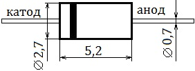
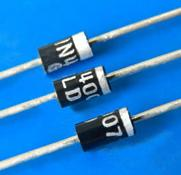

Диод 1N4007
Популярный кремниевый выпрямительный диод. Применяется практически во всех импортных блоках питания бытовой аппаратуры. Кроме того данный диод обладает способностью изменять свою емкость, поэтому его можно использовать в радиоаппаратуре вместо варикапа.
Корпус пластиковый - DO-2.
 |
 |
| Рис. 1 - Размеры диода 1N4007 | Рис. 2 - Внешний вид диода 1N4007 |
Маркировка нанесена на диоде по окружности корпуса.
| Обратное напряжение постоянное (Uобр max) | 1000 В |
| Обратное напряжение импульсное (Uобр имп max) | 1000 В |
| Прямой ток постоянный (Imax) | 1000 мA |
| Прямой ток импульсный (Iимп max) | 30 A |
| Напряжение прямое (Uпрям max) | 1,1 В |
| Обратный ток (Iобр max) | 5 мА |
| Емкость p-n перехода (Cp-n) | 15 пФ |
| Масса | 0,4 г |
| Рабочая температура | -55 ... +150C |
Аналоги 1N4007
- Отечественные - КД258Д, Д226, КД105, КД208, КД209, КД243А-Е, МД217, МД218, 1N4001-1N4006.
- Motorola — HEPR0056RT;
- Philips — BYW43;
- Diotec Semiconductor — 10D4, 1N2070, 1N3549;
- Thomson — BY156, BYW27-1000;